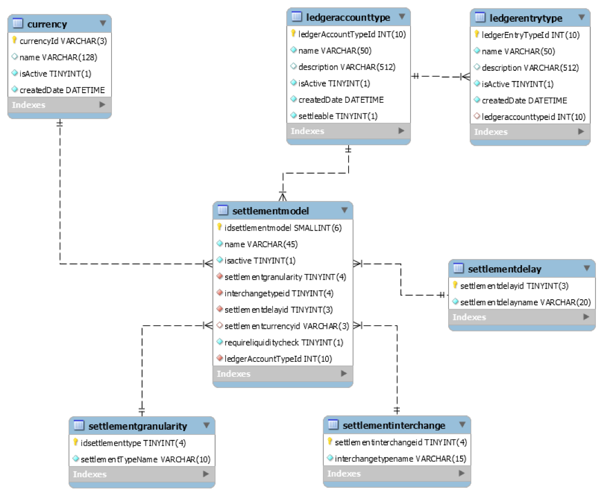

Introduction
This document describes the requirements for changes to the functionality of the OSS Mojaloop switch to support:
The immediate requirement for Mowali of being able to settle according to different timetables for different currencies.
The requirement for TIPS to be able to settle gross via a pooled account.
The requirement for TIPS to use the settlement process for interchange fees.
The requirement for Mojaloop to support the evolving Settlement API
References
The following external references are used in this document:
| Reference | Document |
|---|---|
| 1 | Open API for FSP Interoperability Specification |
| 2 | Settlement API Interface Definition |
| 3 | Current administration API definition |
Versions
| Version | Description | Author | Date | Changes tracked |
|---|---|---|---|---|
| 1.0 | Baseline version | Michael Richards | 2 Dec 2019 | No |
Definition of terms
Settlement model
A settlement model defines a kind of settlement within the scheme. Settlement models can be defined by scheme administrators, and have the following characteristics:
They can support settlement either gross or net settlements. If gross, then a settlement is executed after each transfer is completed. If net, a group of transfers is settled together.
They can support either multilateral or bilateral settlements. If settlements are multilateral, each participant settles with the scheme for the net of its transfers which are included in the settlement. If they are multilateral, each participant settles separately with each of the other participants and the scheme is not a party to the settlement.
They can support either deferred or immediate settlements. If settlements are immediate, they are actioned immediately they are completed. If they are deferred, they are actioned after a period of delay.
They can support continuous or discontinuous settlements. Discontinuous settlements require a formal approval from a resource outside the system to confirm that they have been completed. Continuous settlements can be approved from within the switch, provided that the criteria for approval are met.
They can require liquidity support or not.
Ledger account type
A ledger account type defines a type of internal account. Current values are:
POSITION. Accounts of this type are used for provisioning transfers
SETTLEMENT. Accounts of this type are intended to be reflections of Settlement Accounts held at the Settlement Bank
HUB_RECONCILIATION. Each implementation of the switch has one account of this type for each currency supported by the switch, owned by the virtual DFSP which represents the Hub in the implementation. The account is used during FUNDS IN/OUT operations to represent movements in participants’ SETTLEMENT accounts.
HUB_MULTILATERAL_SETTLEMENT. Each implementation of the switch has one account of this type for each currency supported by the switch, owned by the virtual DFSP which represents the Hub in the implementation. This account type is used to record counterparty information for net amounts paid to or from participants as part of settlements. Entries in this account represent balancing values corresponding with the net value in a participant’s POSITION account for a given settlement.
HUB_FEE. Accounts of this type represent accounts into which fees are collected, or from which they are disbursed. (Not implemented)
Ledger entry type
A ledger entry type categorises the type of funds which are the content of a transfer and which are due to or from a participant as a consequence of that transfer. The current values are:
PRINCIPLE_VALUE. This designates the funds moved as the content of a transfer in the Interoperability API Specification sense of that term (i.e. the amount.amount item in the Transaction object described in Section 7.4.17 of the Interoperability API specification1</sup>.) It should be spelt “principal.”
INTERCHANGE_FEE. This designates fees paid between participants in the system. (Not implemented)
HUB_FEE. This designates fees paid between participants and the scheme. (Not implemented)
POSITION_DEPOSIT. This is used to designate funds transfers which are intended to increase the value of the position in a particular ledger account. (Not implemented)
POSITION_WITHDRAWAL. This is used to designate funds transfers which are intended to reduce the value of the position in a particular ledger account. (Not implemented)
SETTLEMENT_NET_RECIPIENT. This is used to designate funds which a participant is owed by the counterparty as part of a settlement (in a multilateral settlement model, the counterparty will be the hub; in a bilateral settlement model, it will be another party.)
SETTLEMENT_NET_SENDER. This is used to designate funds which a participant owes to the counterparty as part of a settlement (in a multilateral settlement model, the counterparty will be the hub; in a bilateral settlement model, it will be another party.)
SETTLEMENT_NET_ZERO. This is used to generate formal records where a participant’s net position in a settlement is zero.
RECORD_FUNDS_IN. This is used to record funds deposited by a participant to the SETTLEMENT account.
RECORD_FUNDS_OUT. This is used to record funds withdrawn by a participant from the SETTLEMENT account.
The last seven of these types relate to the internal structure of the switch and should be neither visible to nor modifiable by a scheme. The first three fall into a category which is expected to be extensible by the scheme. The table does not currently have an indicator to mark this distinction, but one is proposed in Section TODO.
Participant role types
A participant role type defines the role that a particular participant is playing in a given transaction. The current values of this table are:
PAYER_DFSP. The participant is the debtor in a transfer.
PAYEE_DFSP. The participant is a creditor in a transfer.
HUB. The participant is representing the scheme, and may be either the creditor or the debtor in a transaction.
DFSP_SETTLEMENT. The participant represents the settlement account of a participant in the scheme. It may be either the creditor or the debtor in a transaction. It is used during FUNDS IN/OUT operations. This is used for entries whose counterparty is an entry in the HUB account.
DFSP_POSITION. The participant represents the position of a participant in the scheme. It may be either the creditor or the debtor in a transaction. It is used during the settlement process. This is used for entries whose counterparty is an entry in the HUB account.
Settlement states
A settlement may be in a number of possible states. The states currently supported are:
PENDING_SETTLEMENT. A new settlement consisting of one or more settlement windows has been created. The net amounts due to or from each participant have been calculated and a report detailing these net amounts has been produced.
PS_TRANSFERS_RECORDED: all the calculated net amounts for the settlement have been converted into transfers between the creditor and debtor accounts. It is applied for each settlement entry and at settlement level, when all entries are recorded. This state is not applied to settlement windows.
PS_TRANSFERS_RESERVED: all the funds required for settlement have been reserved (debit amounts only.) It is applied for each settlement entry and at settlement level, when all entries are reserved.
PS_TRANSFERS_COMMITTED: all the credit amounts required as part of the settlement have been committed. It is applied for each settlement entry and at settlement level, when all entries are committed.
SETTLING: It is used only at settlement level if all accounts are not yet settled.
SETTLED: This state is applied to settlement accounts in PS_TRANSFERS_COMMITTED state. When applied to even one account, the settlement will transit to SETTLING state. When all accounts in a window are SETTLED, the settlement window will change from PENDING_SETTLEMENT to SETTLED, while the settlement is still in SETTLING state. When all accounts from all windows are SETTLED, the settlement will be changed to SETTLED. It is possible for a settlement to change directly from PS_TRANSFERS_COMMITTED to SETTLED if all accounts are settled with one request.
ABORTED: the settlement could not be completed and should be rolled back. It is currently only possible to abort a settlement if the state is one of: PENDING_SETTLEMENT, PS_TRANSFERS_RECORDED or PS_TRANSFERS_RESERVED. After having even one account in PS_TRANSFERS_COMMITTED state (even if the settlement as a whole is still in PS_TRANSFERS_RESERVED), a request to abort the settlement is rejected. It should be noted that this prevents abortion in cases such as the default of a participant midway through the settlement process.
The present data model contains a foreign key to the enumeration table containing settlement states from the settlementParticipantCurrencyStateChange table, which maps onto a table which contains a record for each participant/currency/account type combination.
Assumption: this means that the states appropriate to a settlement are also to be applied to the individual elements of a settlement. As a consequence, the descriptions should be taken to refer to individual settlement amounts as well as to the settlement as a whole.
Settlement window states
A settlement is made up of one or more settlement windows. Each settlement window has a state associated with it. The current values of this table are as follows:
OPEN: the settlement window can have ledger movements added to it.
CLOSED: the settlement window cannot have any additional ledger movements added to it. It is available for settlement.
PENDING_SETTLEMENT: the settlement window’s contents have been included in a settlement request, but this request is a request for deferred settlement which has not yet been completed.
SETTLED: the scheme has confirmed that the obligations incurred by participants as a consequence of the settlement to which this settlement window belongs have been met by those participants and the settlement is therefore complete.
ABORTED: the settlement to which this settlement window belongs did not complete. The settlement window is available to be included in another settlement.
Transfer states
Each transaction which passes through the system can be assigned one of a fixed number of states. The current values of this state are:
RECEIVED_PREPARE: the switch has received the transaction request.
RESERVED: the switch has reserved the funds required to cover the transaction.
RECEIVED_FULFIL: the switch has received the fulfilment request, and the transaction has been assigned to a settlement window
COMMITTED: the transaction has been committed.
FAILED: the transaction has failed in some unspecified way and has been aborted. (Not implemented)
RESERVED_TIMEOUT: the transaction has timed out while in the reserved state and has been aborted.
RECEIVED_REJECT: the transaction has been rejected by the payee DFSP and should be aborted.
ABORTED_REJECTED: the transaction has been aborted by the switch as a consequence of its having been rejected by the payee DFSP.
RECEIVED_ERROR: the transaction was not received correctly by the payee DFSP and should be aborted.
ABORTED_ERROR: the transaction has been aborted by the switch as a consequence of its not having been received correctly.
EXPIRED_PREPARED: the transaction has expired during the prepare process and has been aborted.
EXPIRED_RESERVED: the transaction has timed out during the reservation process and has been aborted.
INVALID: the transaction has failed the switch’s internal validation process and has been aborted.
Transfers and transactions
Transfers define a movement of funds in the system. There is a table in the switch which has this name. Some entries in this table are the consequence of external movements which are generated by scheme participants and processed by the switch; others are internally generated by the switch (e.g. to record net movements of funds associated with settlements.)
It may be a source of confusion that, although “transfers” is a term used e.g. in the Interoperability API specification to designate the movement of funds between participants, it is used as the name of a table in the switch which stores other types of funds movement as well.
This document will therefore adopt the following convention:
“Transfers” refers to the content of instructions issued using the /transfers resource of the Interoperability API definition1. (see Section 6.7 of the Interoperability API definition1.)
“Transactions” refers to all movements of funds which are tracked by the switch.
In scope and out of scope
In scope
The following functional items are in scope:
Requesting a settlement by currency
Requesting a settlement by currency and settlement model
Out of scope
Business rules
How do things happen now?
This section describes how the current settlement process works.
Categorisation
The process leading to settlement is initially defined by entries in the participantCurrency table. This table holds a record for each combination of:
Participant
Currency
Ledger account type (see Section 2.2 above.)
Recording positions
Each entry in this table has a corresponding entry in the participantPosition table. This table stores the current committed and reserved positions for each of the combinations described above. Each change to the positions in this table is documented by an entry in the participantPositionChange table, which refers the change back to the transfer table and thence to the authoritative record of transactions.
Assigning transactions to settlement windows
As each transfer is fulfilled, a record is created for it in the transferFulfilment table. This record contains a link to the currently open settlement window.
Records may be created for transactions which are not transfers. Non-transfer transactions have their ilpFulfilment set to 0.
The settlement API 2 contains a resource (closeSettlementWindow) to allow an administrator to close a settlement window and create a new one. The resource takes a settlement window ID as part of the query string, together with a string describing the status to be assigned and a string describing the reason for the change of status. In-line documentation for the resource states: “If the settlementWindow is open, it can be closed and a new window is created. If it is already closed, return an error message. Returns the new settlement window.”
Settlement windows can only be passed a status of CLOSED using this resource.
Initiating a settlement
The initiation of a settlement is initiated by making a call triggered by the scheme making a POST to the /settlements resource in the settlement API. The caller gives a reason for the settlement request. This is a synchronous call, whose return is described in Section 4.1.5 below. Internally, the initiation is marked by the creation of a record in the settlement table and the association of a number of settlement window records in the settlementWindow table with the settlement created. This says: I want this settlement to contain these settlement windows. Each of the settlement windows selected to form part of this settlement must have the status CLOSED or ABORTED. When selected to form part of a settlement, the status of each window should be changed to PENDING_SETTLEMENT. The status of the settlement itself should also be set to PENDING_SETTLEMENT.
Calculating the content of a settlement
When a settlement has been requested and the windows which it will contain have been selected, the switch produces an aggregation of the content of the proposed settlement at the following levels:
Settlement window (from settlementWindow)
Participant (from participantCurrency)
Currency (from participantCurrency)
Account type (from participantCurrency)
Participant role type (from transferParticipant)
Ledger entry type (from transferParticipant)
This query can be provisioned from the database FK links from settlement to settlementwindow, to transferFulfilment (all fulfilled transfers), to transfer, to transferParticipant. The amount is taken from the transferParticipant table. Correct!
Only transfers are included in a settlement. This is implied by the first aggregation criterion above (Settlement window) and the fact that only transfers are assigned to the current OPEN window when a transferFulfilment record is created. All COMMITTED transactions should have an entry in the transferFulfilment table.
The results of this query are used to construct a number of records in the settlementParticipantCurrency table, representing the net amount due to or from each participant and currency in the settlement as a consequence of the settlement. For a given settlement, these records are segmented by: Correct!
Participant (from participantCurrency)
Currency (from participantCurrency)
Account type (from participantCurrency)
This report is used as the basis of the information returned from the initial POST to the /createSettlement resource of the settlement API (see Section 4.1.4 above.)
Bilateral settlements are not currently implemented.
Creating position records for the settlement
A record is inserted in the transfer table for each net amount calculated in the previous step when the settlement account transitions from PENDING_SETTLEMENT to PS_TRANSFERS_RECORDED. Please note that PS stands for PENDING_SETTLEMENT. Each of these records will have the account type SETTLEMENT. The ledger entry type will be SETTLEMENT_NET_SENDER, SETTLEMENT_NET_RECIPIENT or SETTLEMENT_NET_ZERO depending on whether the participant owes money to the scheme, is owed money by the scheme or is neutral in the settlement, respectively. The transfer participant type is HUB for the Hub participant and DFSP_POSITION for the DFSP participant. The account type is imposed by the participant currency – for the Hub participant it is the HUB_MULTILATERAL_SETTLEMENT and for the DFSP participant it is the POSITION account. This enables the switch to reset the participant’s position when the window enters the PS_TRANSFERS_COMMITTED state.
Progress of the settlement
As the scheme verifies that participants have settled the amounts due from them, the scheme administrator can update the switch with this information.
Updating the status of settlement windows
Three methods of performing this update are supported. Each of these methods is discussed in more detail below.
updateSettlementById
An administrator may issue a PUT to the /updateSettlementById resource on the settlement API, giving the settlement ID of the settlement they wish to update as part of the query (e.g. PUT /updateSettlementById/settlements/123.) The content of the request is as follows:
A state to be assigned to the participants required. The state is constrained to be either ABORTED or INVALID
A reason for the change of state.
An external reference for the change.
An array of participants to which the status is to be applied. The following information is given for each participant:
The ID of the participant. This is the internal Mojaloop ID of the participant.
An array of accounts. The content of each account is as follows:
An ID. The description characterises this as the participant’s currency ID QUESTION: Is this correct? It is an integer, where a VARCHAR(3) would be expected.
A reason. A string which presumably can contain anything.
The state of the settlement for the account. This is not constrained by an enum, but is a simple string. It is not clear how this status relates to the overall state given in Item 1 above.
An external reference for the change in state.
A call to this API resource may contain either items 1-3 above or an array of accounts as specified in item 4 above, but not both. If it contains items 1-3 above, then all the items must be present. If these rules are breached, then the switch will reject the request.
updateSettlementBySettlementParticipant
An administrator may issue a PUT to the /updateSettlementBySettlementParticipant resource on the settlement API, giving the settlement ID and the participant ID of the parts of the settlement they wish to update as part of the query (e.g. PUT /updateSettlementByParticipant/settlements/123/participants/56789.) The content of the request is as follows:
An array of state changes, whose content is as follows:
The currency ID whose status is to be changed. This is an integer, where a VARCHAR(3) would be expected.
A reason for the state change.
The state requested. This is a string, where an enumeration would be expected.
An external reference for the change in state.
Note that this is an array with the same structure as that described in item 4 of Section 5.1.7.1 above, although it is defined separately in the API definition.
updateSettlementBySettlementParticipantAccount
An administrator may issue a PUT to the /updateSettlementBySettlementParticipantAccount resource on the settlement API, giving the settlement ID, the participant ID and the account ID of the part of the settlement they wish to update as part of the query (e.g. PUT /updateSettlementByParticipant/settlements/123/participants/56789/accounts/1.) The content of the request is as follows:
The state requested. This is a string, where an enumeration would be expected.
A reason. A string which presumably can contain anything.
An external reference for the change in state.
Note that this is a structure with most of the same members as the structure defined in Item 1 of Section 5.1.7.2 above, although the items appear in a different order.
How changes in settlement window state are processed
The action taken in response to these calls depends on the status assigned to the account. In any case, a record is created in the settlementParticipantCurrencyStateChange table, giving the state identifier, the reason and an external reference for the change.
There is a sequence of steps defined for a settlement. Each step must be followed in order, and no steps may be omitted. The sequence of steps is hard-coded into the application and is as follows:
PENDING_SETTLEMENT
PS_TRANSFERS_RECORDED
PS_TRANSFERS_RESERVED
PS_TRANSFERS_COMMITTED
SETTLED
A settlement can be aborted provided no account in the settlement has reached a status of PS_TRANSFERS_COMMITTED.
The following actions are taken on each change of status:
PENDING_SETTLEMENT to PS_TRANSFERS_RECORDED
A record is generated in the transfer table to record the change in state. The parties to this transfer are the POSITION account type and the HUB_MULTILATERAL_SETTLEMENT type. If the participant account is a net creditor for the settlement, then the ledger entry type will be set to SETTLEMENT_NET_RECIPIENT. If the participant account is a net debtor for the settlement, then the ledger entry type will be set to SETTLEMENT_NET_SENDER. If the participant account is neutral for the settlement, then the ledger entry type will be set to SETTLEMENT_NET_ZERO.
A record is also created in the transferstatechange table with the RECEIVED_PREPARE state, which means that no positions have been changed.
When the last participating account is changed to PS_TRANSFERS_RECORDED, then the settlement’s status is also changed to PS_TRANSFERS_RECORDED.
If an administrator attempts to change an account’s state to PS_TRANSFERS_RECORDED and either the settlement’s state or the settlement account’s state is not PENDING_SETTLEMENT or PS_TRANSFERS_RECORDED, then the request will be rejected.
PS_TRANSFERS_RECORDED to PS_TRANSFERS_RESERVED
A new record is created in the transferstatechange table for the transfer that was created in section 5.1.7.2 above. This record will have a status of RESERVED. If the participant is a net creditor as a result of the settlement, then a record will also be created in the participantPositionChange table if the account being reserved is for a net creditor in the settlement, as defined in Section 5.1.7.2 above. The Net Debit Cap is checked at this point, and if the current position exceeds the Net Debit Cap, then the Net Debit Cap is automatically adjusted by the amount of the net credit due to the account as part of the settlement and the participant is sent a notification of the new Net Debit Cap value and its currency.
When the last participating account is changed to PS_TRANSFERS_RESERVED, then the settlement’s status is also changed to PS_TRANSFERS_RESERVED.
If an administrator attempts to change an account’s state to PS_TRANSFERS_RESERVED and either the settlement’s state or the settlement account’s state is not PS_TRANSFERS_RECORDED or PS_TRANSFERS_RESERVED, then the request will be rejected.
PS_TRANSFERS_RESERVED to PS_TRANSFERS_COMMITTED
A new record is created in the transferstatechange table for the transfer that was created in section 5.1.7.2 above. This record will have a status of COMMITTED. If the participant is a net debtor as a result of the settlement, then a record will also be created in the participantPositionChange table if the account being reserved is for a net debtor in the settlement, as defined in Section 5.1.7.2 above.
When the last participating account is changed to PS_TRANSFERS_COMMITTED, then the settlement’s status is also changed to PS_TRANSFERS_COMMITTED.
If an administrator attempts to change an account’s state to PS_TRANSFERS_COMMITTED and either the settlement’s state or the settlement account’s state is not to PS_TRANSFERS_RESERVED or PS_TRANSFERS_COMMITTED, then the request will be rejected.
PS_TRANSFERS_COMMITTED to SETTLED
When the first account is changed to a status of SETTLED, the settlement’s state is changed to SETTLING.
When the last participating account is changed to SETTLED, then the settlement’s status is also changed to SETTLED.
If an administrator attempts to change an account’s state to SETTLED and either the settlement’s state or the settlement account’s state is not to PS_TRANSFERS_COMMITTED or SETTLED, then the request will be rejected.
Aborting the settlement
If there is any failure in the scheme’s process for recovering the amounts due from participants in a settlement, the scheme can update the switch with this information by issuing a PUT to the /updateSettlementById resource of the settlement API and setting the state value of the content of the message to ABORTED. A PUT call on the /updateSettlementById resource is the only method which may be used for ABORTING a settlement. If any account information is given in the call, then neither the state nor the reason nor the externalReference fields may be set. if the state value is set at the top level of the call, then the reason field must also be set, and the request will be rejected if any account information is given in the call.
If an attempt is made to abort a settlement, and any of the accounts in the settlement have the status PS_TRANSFERS_COMMITTED or SETTLED, then the request will be rejected.
When a call is received, a new record is created in the settlementParticipantCurrencyStateChange table, and is given the appropriate status based on the status reported by the caller. Depending on the update that was received, this may also require the status of the transaction and that of the participant position to be updated. No, it is done at settlement level for the entire settlement and all entries in settlementParticipantCurrency are affected.
Note: if the settlement is bilateral, then there is no obvious reason to abort the entire settlement if one interchange fails. We should think about this use case and how we would want to represent it. This document does not consider this use case.
Aborting a settlement comprises the following steps:
The status of the transfers created in Section 5.1.6 above should be changed to ABORTED.
A new record is added to the settlementParticipantCurrencyStateChange table for each of the participant records in the settlement. This record has a status of ABORTED, and the currentStateChangeId column in the settlementParticipantCurrency table for that participant record is changed to point to this new record.
A new record is added to the settlementWindowStateChange table for each settlement window in the settlement. This record has a status of ABORTED, and the currentStateChangeId column in the settlementWindow table for that window is changed to point to this new record.
A new record is added to the settlementStateChange table for the settlement. This record has a status of ABORTED, and the currentStateChangeId column in the settlement table is changed to point to this new record.
If positions have been reserved for net creditors as a result of the settlement (see Section 5.1.7.3 above,) then a balancing entry will be created in the participantPositionChange table to reverse the reservation of funds. This action does not at present reverse any change to the account’s Net Debit Cap that may have been made as a consequence of this reservation.
Any records created in the transfers table (see Section 5.1.7.2 above) will have their state changed in two steps by adding records to the transferStateChange table. The first step will change the transfer state to REJECTED. The second step will change the state to ABORTED.
Question: should there be/is there a time-out after which a settlement will be aborted if it has not completed? If there is, how is it set? No, there isn’t timeout on a settlement level. But when transfers are prepared (for PS_TRANSFERS_RECORED) expiration is set on a transfer level. Its value is controlled by a Config.TRANSFER_VALIDITY_SECONDS, which currently defaults to 432000 seconds, which equals 5 days. It is big enough to avoid expiration. Still, if that happens, it would leave the data in an unrecoverable by the API state. This is very good point and should be certainly addressed with the next increment!
Recording the deposit of funds
As participants are informed of their liabilities under the settlement, it is expected that they will deposit funds in their settlement account to cover those liabilities. These activities are recorded via the central ledger administration interface resource recordFundsIn.
This action is called through a POST to the administration interface, giving the name of the participant and the account to be credited in the form POST /participants/{participantName}/accounts/{accountId} (e.g. POST /participants/myDfsp/accounts/1234) The content of this message is as follows.
transferId: a UUID to be used to identify the transfer in the switch.
externalReference: a reference used to identify the transfer for the administrator
action: this should be set to “recordFundsIn” for recording funds in.
reason: the reason why the transfer is being made.
amount: the amount of the transfer.
amount: the actual amount being transferred
currency: the ISO 4217 code of the currency of the deposit.
extensionList: a series of key/value pairs which are used to carry additional information
When an administrator records that a participant has deposited funds to an account, the amount deposited is recorded in an entry in the transfer table. The parties to the transfer are recorded by entries in the transferParticipant table, with a ledger account type of the type requested in the POST for the participant and HUB_RECONCILIATION for the balancing entry. For deposits, the participant account will be the creditor and the HUB_RECONCILIATION account the debtor. The application will currently reject requests to this interface which do not have a ledger account type of SETTLEMENT.
A deposit goes through the following changes of state:
A record is created for the transfer in the transferStateChange table with a state of RECEIVED_PREPARE.
Next, a record is created in the transferStateChange table with the state RESERVED. This also creates a record in the participantPositionChange table to record the reservation of funds in the HUB_RECONCILIATION account, and the participantPosition table’s value for that account is updated.
Finally, a record is created in the transferStateChange table with the state COMMITTED. After this act, records are created in the participantPositionChange table for the creditor account to record the completion of the deposit, and the appropriate record in the participantPosition table has its balance updated.
These changes of state are simply chained together in sequence. There is no interval or trigger between the steps.
This activity has no direct effect on the settlement process or on the Net Debit Cap.
Recording the withdrawal of funds
At various times, participants may wish to withdraw funds from their settlement accounts: for instance, if they are long-term net beneficiaries of transfers and are building up a surplus of liquidity. These activities are recorded via a two-phase process. In the first phase, the funds for the proposed withdrawal are reserved via the central ledger administration interface resource recordFundsOutPrepareReserve. In the second phase, the withdrawal is committed via the recprdFundsOutCommit resource or aborted through the recordFundsOutAbort resource.
These activities are defined below.
recordFundsOutPrepareReserve
This action is called through a POST to the administration interface, giving the name of the participant and the account to be credited (e.g. POST /participants/myDfsp/accounts/1234) The content of this message is as follows.
transferId: a UUID to be used to identify the transfer in the switch.
externalReference: a reference used to identify the transfer for the administrator
action: this should be set to “recordFundsOutPrepareReserve” for recording funds withdrawals.
reason: the reason why the transfer is being made.
amount: the amount of the transfer.
amount: the actual amount being transferred
currency: the ISO 4217 code of the currency of the deposit.
extensionList: a series of key/value pairs which are used to carry additional information
When an administrator records that a participant has requested the withdrawal of funds from an account, the amount to be withdrawn is recorded in an entry in the transfer table. The parties to the transfer are recorded by entries in the transferParticipant table, with a ledger account type of the type requested in the POST for the participant and HUB_RECONCILIATION for the balancing entry. For withdrawals, the participant account will be the debtor and the HUB_RECONCILIATION account the creditor. The application will currently reject requests to this interface which do not have a ledger account type of SETTLEMENT.
Reservation of a withdrawal goes through the following changes of state:
A record is created for the transfer in the transferStateChange table with a state of RECEIVED_PREPARE.
Next, a record is created in the transferStateChange table with the state RESERVED. This also creates a record in the participantPositionChange table to record the reservation of funds in the participant’s settlement account, and the participantPosition table’s value for that account is updated.
These changes of state are simply chained together in sequence. There is no interval or trigger between the steps.recordFundsOutCommit
This action is called through a POST to the administration interface, giving the name of the participant and the account to be credited (e.g. POST /participants/myDfsp/accounts/1234) The content of this message is as follows.
transferId: a UUID to be used to tie the commit to the preceding reservation in the switch.
externalReference: a reference used to identify the transfer for the administrator
action: this should be set to “recordFundsOutCommit” for recording funds commitments.
reason: the reason why the transfer is being made.
amount: the amount of the transfer.
amount: the actual amount being transferred
currency: the ISO 4217 code of the currency of the deposit.
extensionList: a series of key/value pairs which are used to carry additional information
When an administrator records that a participant wants to commit the withdrawal of funds from an account, the original entry in the transfer table is identified. The parties to the transfer are recorded by entries in the transferParticipant table, with a ledger account type of the type requested in the POST for the participant and HUB_RECONCILIATION for the balancing entry. For withdrawals, the participant account will be the debtor and the HUB_RECONCILIATION account the creditor. The application will currently reject requests to this interface which do not have a ledger account type of SETTLEMENT.
Commitment of a withdrawal goes through the following changes of state: a record is created in the transferStateChange table with the state COMMITTED. After this act, records are created in the participantPositionChange table for the creditor account to record the completion of the deposit, and the appropriate record in the participantPosition table has its balance updated. These changes of state are simply chained together in sequence. There is no interval or trigger between the steps.
This activity has no direct effect on the settlement process or on the Net Debit Cap.
Proposed enhancements
This section describes the enhancements to the existing OSS settlement process (described in Section 4.1 above) which are proposed. Each enhancement is shown in a separate section and, where there are dependencies between enhancements, these are listed in the enhancement’s description.
Request settlement by currency [EPIC]
The following changes are required to support settling separately for different currencies.
Database changes
The following changes are required to support multi-currency settlement.
Addition of a settlementWindowContent table [Story #1]
A new table will be added to the database. The name of this table will be settlementWindowContent. The table will contain an entry for each item of content in a given settlement window, broken down by ledger account type and currency. The full column structure of the table is as follows:
| Column name | Description | Attributes |
|---|---|---|
| settlementWindowContentId | Auto-generated key for the record. | BIGINT(20). Unsigned, not null, primary key, autoincrement |
| settlementWindowId | The settlement window that the record belongs to. | BIGINT(20). Unsigned, not null. Foreign Key to settlementWindow |
| ledgerAccountTypeId | The ledger account that the record refers to. | INT(10). Unsigned, not null. Foreign key to ledgerAccountType |
| currencyId | The currency that the record refers to. | VARCHAR(3). Not null. Foreign key to currency. |
| createdDate | The date and time when the record was created. | DATETIME. Not null. Defaults to CURRENT_TIMESTAMP. |
| currentStateChangeId | The current state of this entry. | BIGINT(20). Unsigned. Foreign key to settlementWindowContentStateChange |
Addition of a settlementWindowContentStateChange table [Story #2]
A new table will be added to the database. The name of this table will be settlementWindowContentStateChange. The table will track changes to the status of entries in the settlementWindowContent table. The full column structure of the table is as follows:
| Column name | Description | Attributes |
|---|---|---|
| settlementWindowContentStateChangeId | Auto-generated key for the record. | BIGINT(20). Unsigned, not null, primary key, autoincrement |
| settlementWindowContentId | The settlement window content record whose status is being tracked. | BIGINT(20). Unsigned, not null. Foreign Key to settlementWindowContent |
| settlementWindowStateId | The record’s status. | VARCHAR(50). Not null. Foreign key to settlementWindowState |
| reason | An optional field giving the reason for the state being set. | VARCHAR(512). |
| createdDate | The date and time when the record was created | DATETIME. Not null. Defaults to CURRENT_TIMESTAMP |
Changes to the settlementTransferParticipant table [Story #3]
The name of the settlementTransferParticipant table should be changed to settlementContentAggregation.
The column structure of the settlementContentAggregation table should be modified as follows:
- Remove the following foreign keys from the table:
- settlementtransferparticipant_settlementid_foreign
- settlementtransferparticipant_settlementwindowid_foreign
- Remove the following columns from the table:
- settlementId
- settlementWindowId
- Add the following column to the table:
- Column name: settlementWindowContentId
- Attributes: BIGINT(20), unsigned, not null
- Add the following foreign key to the table:
- Name: settlementContentAggregation_settlementwindowcontent_foreign
- Child column settlementWindowContentId
- Refers to table: settlementWindowContent
- Refers to column: settlementWindowContentId
All database scripts which use the settlementTransferParticipant table will be changed to accommodate the new name and structure of the table. [Story #8]
Queries to filter the records in the settlementContentAggregation table required for a settlement in a particular currency will need to join across from that table to the participantCurrency table using the participantCurrencyId column to ascertain the currency to which a particular row refers. The currencyId column is held in the participantCurrency table. [Story #9]
Add structures relating to settlement models [Story #4]
In order to support the specification of settlement models, which will include currencies, the database changes specified in Section 6.2.1.1 below should be added to the database.
Settlement models describing the settlement types required for a given implementation will be developed and tested.[Story #4a]
Change to settlement table [Story #5]
The settlement table in the central ledger database needs to be modified to add a settlementModel column. This column should have the following characteristics:
- The column should be required (NOT NULL) and unsigned.
- The column’s data type should be integer(10)
- The column should be defined as a foreign key reference to the settlementModelId field of the settlementModel table.
When this change is applied to an existing database, a settlement model to describe the default settlement should be created. The settlementCurrencyId column in this model should be left blank (= all currencies.) The settlementModel column in all existing records in the settlement table should be set to point to this model’s ID. A script to apply this change should be created, tested and stored in the repository.
Changes to processing
The following changes to the processing code are required to support multi-currency settlement.
Change to code supporting closeSettlementWindow resource
The existing API 2 provides a single function (closeSettlementWindow) to manage settlement windows. This function allows its user to select a settlement window by ID number and to input a new status for the window and a reason for that status.
When a settlement window is closed, the code supporting this activity should perform two functions, as follows. These functions should be performed in the background and without impacting system performance.
Generate records in the settlementWindowContent table [Story #1095]
The code should generate a record in the settlementWindowContent table for each ledger entry type/currency combination found in the transfers in the settlement window. This information can be obtained from the following query:
SELECT DISTINCT
@mySettlementWindowId, pc.ledgerAccountTypeId, pc.currencyId
FROM transferFulfilment tf
INNER JOIN transferParticipant tp
ON tp.transferId = tf.transferId
INNER JOIN participantCurrency pc
ON pc.participantCurrencyId = tp.participantCurrencyId
WHERE tf.settlementWindowId = @mySettlementWindowId;
Generate records in the settlementContentAggregation table [Story #1095]
The code should calculate the aggregate values for all transfers which form part of that settlement window and store them in the settlementContentAggregation table. Aggregates should be produced for the following segmentation:
- Participant
- Currency
- Ledger account type
- Participant role type
- Ledger entry type
The following query will perform this function for a given settlement window:
INSERT INTO settlementContentAggregation
(settlementWindowContentId, participantCurrencyId,
transferParticipantRoleTypeId, ledgerEntryTypeId, amount)
SELECT swc.settlementWindowContentId, pc.participantCurrencyId,
tp.transferParticipantRoleTypeId, tp.ledgerEntryTypeId, SUM(tp.amount)
FROM transferFulfilment tf
INNER JOIN transferParticipant tp
ON tf.transferId = tp.transferId
INNER JOIN participantCurrency pc
ON pc.participantCurrencyId = tp.participantCurrencyId
INNER JOIN settlementWindowContent swc
ON swc.settlementWindowId = tf.settlementWindowId
AND swc.ledgerAccountTypeId = pc.ledgerAccountTypeId
AND swc.currencyId = pc.currencyId
WHERE tf.settlementWindowId = @mySettlementWindowId
GROUP BY swc.settlementWindowContentId, pc.participantCurrencyId,
tp.transferParticipantRoleTypeId, tp.ledgerEntryTypeId;
createSettlement
The parameters for the createSettlement resource should be extended to include the settlement model for which the settlement is required.
When the settlement is created, the settlement model for which the settlement is required should be added to the new row in the settlement table. [Story #1097]
When a settlement is requested, the switch should check that the settlement model for which settlement is being requested requires NET settlement and not GROSS settlement. If the requested settlement model requires GROSS settlement, then the request should be rejected with an error.
The verification procedures associated with the createSettlement resource should be changed to check that some of the settlement windows associated with the proposed settlement contain entries for the settlement model requested. If there are no entries for the settlement model requested for any of the settlement windows requested, then an error should be returned and the settlement request rejected. [Story #1096]
Updating the progress of a settlement
When the status for a settlement participant is changed to SETTLED, this will result in changes to the status of all the records in the settlementContentAggregation table for the given participant, identified by the compound key: settlementId + participantCurrencyId.
[Story #16]
The code should then check to see if, as a result of the updates to the records in settlementContentAggregation, all records for a given combination of settlement window, ledger account type and currency have the same status. If they have, then the appropriate record in the settlementWindowContent table should be updated to have that status.
The code should then check to see if all records in the settlementWindowContent table for a given settlement window have the same status. If they have, then the appropriate record in the settlementWindow
Support continuous gross settlement
Continuous Gross Settlement is a settlement model in which each transaction is settled as soon as it is fulfilled. The following changes are required to implement this change.
Database changes
The database changes shown in Section 8 below should be implemented. These can be summarised as follows:
Changes to support the settlement model
A number of new tables are required to define a settlement model and to store the enumerations for its definition types. This comprises the following tables in the ERD:
settlementDelay
settlementInterchange
settlementModel
In addition, the settlementmodel table has foreign keys to two existing tables, as follows:
A foreign key to the currency table to enable the settlement model to settle only scheme accounts in a particular currency. If this entry is blank, this should be interpreted as saying that the settlement model settles all currencies that are not specified as being settled by other settlement models for the same account type.
A foreign key to the ledgerAccountType table. This specifies that the settlement model settles accounts of this type.
Changes to the ledgeraccounttype table
The current ledgeraccounttype table stores a number of entries for account types which should not be used for settlements – for instance, HUB_MULTILATERAL_SETTLEMENT. A column should therefore be added to the ledgeraccounttype table to indicate whether the account type can be attached to a settlement model or not. This column is called settleable, and is specified as a Boolean value, NOT NULL and with a default of FALSE.
Of the existing ledger account types, PRINCIPAL_VALUE, INTERCHANGE_FEE and HUB_FEE should be marked as capable of being attached to settlement models (this value should be TRUE.) For all other ledger account types, the column should be set to FALSE. If new ledger account types are added to this table via the eventual settlement API, then they should have a value of TRUE.
Changes to the ledgerentrytype table
Implementation of the TIPS settlement model requires an explicit association between ledger entry types and the account types in which they should appear. Since each ledger entry type should only appear in a single account type, though multiple ledger entry types may appear in a given account type, this is modelled by including a foreign key reference to the ledgeraccounttype table as a column in the ledgerentrytype table. It should be noted that this applies only to ledger entry types which are associated with a settlement model, as described in Section 6.2.1.2 above. The assignment of existing entries in the database would be as follows:
| Ledger Entry Type | Ledger Account Type |
|---|---|
| PRINCIPAL_VALUE | POSITION |
| INTERCHANGE_FEE | INTERCHANGE_FEE |
| HUB_FEE | HUB_FEE |
Changes to the settlement table
The settlement table should have a column added to it to allow the settlement model to be used in settling it to be specified. The column should be called settlementModelId. It should have the same data type as the equivalent field in the settlementModel table, and should be a foreign key into that table. It should be defined as not null.
Changes to the settlementWindow table
As well as settlements, individual settlement windows will need to be assigned to settlement models. The settlementWindow table should therefore have a column added to it to allow the settlement model to be used in settling it to be specified. The column should be called settlementModelId. It should have the same data type as the equivalent field in the settlementModel table, and should be a foreign key into that table. It should be defined as not null.
This concludes the list of schema changes required to support the TIPS settlement models
API changes
API Support for the settlement functionality required for TIPS will include the following functions:
Close a settlement window
The existing API definition 2 supports a closeSettlementWindow resource. This function allows its user to select a settlement window by ID number and to input a new status for the window and a reason for that status. This resource will retain its current signature, but the code supporting it needs to change as follows.
When a settlement window is closed, the system should create a new settlement window with the same settlement model as the newly closed settlement window, and should make this the active window.
When a settlement window is closed, the code supporting this activity should calculate the aggregate values for all transfers which form part of that settlement window and store them in the settlementTransferParticipant table. Aggregates should be produced for the following segmentation:
Participant
Currency
Ledger account type
Participant role type
Ledger entry type
The following example code will produce the aggregations required for a given settlement window (identified as \@MyWindow in the example):
SELECT
S.settlementId
, W.settlementWindowId
, P.participantCurrencyId
, P.transferParticipantRoleTypeId
, P.ledgerEntryTypeId
, SUM(P.amount)
, CURRENT_TIMESTAMP AS createdDate
FROM
settlementWindow W INNER JOIN settlementModel M ON W.settlementModelId = M.idsettlementModel
INNER JOIN settlementSettlementWindow S ON W.settlementWindowId = S.settlementWindowId
INNER JOIN ledgerAccountType L ON M.idsettlementModel = L.settlementModelId
INNER JOIN transferFulfilment F ON W.settlementWindowId = F.settlementWindowId
INNER JOIN transferParticipant P ON F.transferId = P.TransferId
INNER JOIN participantCurrency PC ON P.participantCurrencyId = PC.participantCurrencyId
AND PC.ledgerAccountTypeId = L.ledgerAccountTypeId
WHERE
W.settlementWindowId = \@MyWindow
AND
(PC.currencyId = M.settlementcurrencyId OR M.settlementcurrencyId IS NULL)
GROUP BY
S.settlementId
, W.settlementWindowId
, P.participantCurrencyId
, P.transferParticipantRoleTypeId
, P.ledgerEntryTypeId;
Getting information about a settlement window
The existing API definition 2 supports a getSettlementWindowById resource. This function allows its user to obtain information about a settlement window by giving the ID that was returned when the settlement window was created.
This call returns a SettlementWindow object. This object will need to be extended to include the name of the settlement model to which the settlement window belongs.
Getting information about settlement windows using parameters
The existing API definition 2 supports a getSettlementWindowsByParams resource. This function allows its user to obtain information about all settlement windows which meet the criteria specified by the user. The following changes will need to be made to this call:
The parameters supported by the call will need to be extended to allow a user to request settlement windows by settlement model. The user should be able to enter the name of a settlement model.
This call returns an array of SettlementWindow objects. It is assumed that these objects will have been changed by the changes specified in Section 6.2.2.2 above, and that no further processing will be required for this call.
Requesting a settlement
The existing API definition 2 supports a createSettlement resource. This function allows its user to request a settlement for a given set of settlement windows, which are passed to the resource as parameters. The following changes will need to be made to this call:
The parameters for the createSettlement resource are defined in the SettlementEventPayload object. This object will need to have a parameter added to specify the settlement model which is to be settled. The parameter should be called settlementModel, and it should be a string. It should be required.
The following validation should be performed on this parameter when the request is received via the API:
The content of the parameter is a case-insensitive match for an active entry in the settlementmodel table, ignoring whitespace.
The settlementtypeid column in the record in the selected settlement model should not point to a record in the settlementdelay table whose settlementDelayName value is “IMMEDIATE”. If it does, the request should be rejected and an error message returned to the caller.
The id of the settlement model requested should be stored in the settlementModelId column of the row created in the settlement table to describe the settlement.
Returning the status of a settlement
The existing API definition 2 supports a getSettlementById resource. This function allows its user to obtain information about a settlement by giving the ID that was returned when the settlement was created.
Information about settlements is returned in a Settlement object. A parameter should be added to the Settlement object to record the settlement model which is being settled by the settlement.
The parameter should be called settlementModel, and it should be a string. It should be required.
Note: when a settlement is requested, a reason is given; but the Settlement object does not contain the reason. It might be worth including this in the definition of the Settlement object.
Getting information about settlements using parameters
The existing API definition2 supports a getSettlementsByParams resource. This function allows its user to obtain information about all settlements by giving the ID that was returned when the settlement was created. The following changes will need to be made to this call:
- This call returns an array of Settlement objects. It is assumed that these objects will have been changed by the changes specified in Section 6.2.2.5 above, and that no further processing will be required for this call.
Getting information about a specific participant in a settlement
The existing API definition 2 supports a getSettlementBySettlementParticipant resource. This function allows its user to obtain information about a settlement which meet the criteria specified by the user. The following changes will need to be made to this call:
- This call returns a Settlement object. It is assumed that this object will have been changed by the changes specified in Section 6.2.2.5 above, and that no further processing will be required for this call.
Updating a specific settlement
The existing API definition 2 supports an updateSettlementById resource. This function allows its user to update information about a settlement by giving the ID that was returned when the settlement was created.
This call returns a Settlement object. It is assumed that this object will have been changed by the changes specified in Section 6.2.2.5 above, and that no further processing will be required for this call.
Updating a settlement for a specific participant
The existing API definition 2 supports an updateSettlementBySettlementParticipant resource. This function allows its user to update information about a settlement by giving the ID that was returned when the settlement was created, and the participant whose information is to be updated.
This call returns a Settlement object. It is assumed that this object will have been changed by the changes specified in Section 6.2.2.5 above, and that no further processing will be required for this call.
Updating a settlement for a specific participant and account
The existing API definition 2 supports an updateSettlementBySettlementParticipantAccount resource. This function allows its user to update information about a settlement by giving the ID that was returned when the settlement was created, and the participant and account whose information is to be updated.
This call returns a Settlement object. It is assumed that this object will have been changed by the changes specified in Section 6.2.2.5 above, and that no further processing will be required for this call.
Recording the deposit of funds by a participant
The existing administration API 3 contains functions to enable an administrator to record a deposit made by a participant to an account. This process is described in Section 5.2 above. The API should be changed to align it with the structures used in the existing settlement API 2. In addition, the signature of the API should be extended to allow the administrator to specify the account type that will be updated by the deposit.
Recording the withdrawal of funds by a participant
The existing administration API 3 contains functions to enable an administrator to record a withdrawal made by a participant from an account. This process is described in Section 5.3 above. The API should be changed to align it with the structures used in the existing settlement API 2. In addition, the signature of the API should be extended to allow the administrator to specify the account type that will be updated by the withdrawal.
New resource: openSettlementWindow
In the current architecture, an instance of each settlement window is created when the instance is set up, and subsequent settlement windows are created by closing the current settlement window. In the new settlement management structure, we will need the ability to create new settlement windows where no predecessors exist: for instance, when an administrator decides to settle a particular currency using a different settlement model.
Processing changes
The following processing changes are required to implement the changes required to support continuous gross settlement.
Attributing ledger entries to the correct ledger account type
When a ledger entry is created, it should be assigned to the ledger account type specified in the ledgeraccounttypeid column of the row in the ledgerentrytype table appropriate to the ledger entry type which is being created.
For example: if a normal entry representing a transfer is being created, it will have a ledger entry type of PRINCIPAL_VALUE. It should be assigned to the POSITION account type (the default position at present.) This implies that the match described in Section 6.2.1.3 above has been implemented.
Question: how does the switch decide whether or when to construct a record in the participantPositionChange table? How would it be possible to select the ledger account type to which the position refers?
Processing interchange fees
In order to support the scheme model implemented by TIPS, we need to generate and settle liabilities incurred as a consequence of making transfers between particular types of customer. The general form of this rule is as follows:
If the transaction is a wallet-to-wallet P2P transaction, then the receiver DFSP pays the sender DFSP 0.6% of the amount of the transaction.
No interchange fees are levied for on-us transactions.
The business decisions around this requirement are:
The definition of whether or not a payee account is a wallet will be returned by the payee DFSP as part of customer discovery. The mechanism by which this is implemented is outside the scope of this document.
Interchange fees will be captured by the switch when the transfers which incur them are completed.
Interchange fees will have the ledger entry type INTERCHANGE_FEE and will be recorded in accounts whose type is INTERCHANGE_FEE.
Interchange fees will be settled multilaterally, net and deferred. It is expected that this settlement will take place monthly.
Interchange fees do not require liability cover by participants.
This functionality will be implemented as a partial instance of a general process for defining and executing rules, and for taking actions based on the outcome of evaluation of a rule. For this particular case, we propose the changes described in the following sections.
Part 1: Run script for batch update of interchange fees when settlement window is closed.
Include stories to manage account type definition
Part 2: Add reservation on prepare using script and modify fulfilment to fulfil all ledger types for which an entry has been made
Evaluating a rule
The process of evaluating a rule is based on the following assumptions:
There will be a standard form of rule evaluation with the following structure:
A transaction object will be passed as the parameter to the rule evaluation function.
The rule evaluation itself will use a complex if statement.
If the rule evaluates to TRUE, then an action should be executed as described in Section 6.3.2 below.
An example of a rule function to evaluate a TIPS interchange fee rule could be:
function evaluateInterchangeFee (transaction) {
if(
(transaction.payee.fspId.toLowerCase() != transaction.payer.fspId.toLowerCase())
&& (transaction.extensionList[“payerAccountType”].toLowerCase() == "Wallet".toLowerCase()
&& transaction.extensionList[“payeeAccountType”].toLowerCase() == "Wallet".toLowerCase())
&& (transaction.transactionType.scenario.toLowerCase() == "TRANSFER".toLowerCase()
&& transaction.transactionType.initiator.toLowerCase() == "PAYER".toLowerCase()
&& transaction.transactionType.initiatorType.toLowerCase() == "CONSUMER".toLowerCase())
) {
// Do some good stuff
};
};
Taking action after evaluating a rule
If a rule evaluates to TRUE as described in Section 6.3.1 above, then appropriate action should be taken. In the case of the immediate example of interchange fees, the action taken should be to add two entries to the participants’ interchange fee accounts, on recording the debit from the payee of the interchange fee amount and the other recording the credit to the payer of the interchange fee amount.
A simple yet general way of supporting actions of this type is to define a class (which might be called ruleAction) and adding methods to it to represent the actions to be taken. The rule evaluation function can then instantiate the class and call the appropriate function.
In the case of the interchange fees, we would define an action called addLedgerEntry, with the following parameters:
The transfer ID for which the ledger entry is being created
The ledger entry type to be used
The currency in which the amount is denominated
The amount of the fee
The FSP ID of the credit party
The FSP ID of the debit party
This might appear in the rule evaluation function as:
myAction.addLedgerEntry(transaction.transactionId,
transaction.transactionId,
"INTERCHANGE_FEE“,
transaction.currency,
transaction.amount*0.006,
transaction.payer.fspId,
transaction.payee.fspId);
Providing a generic framework for rule evaluation
Finally, we will need to provide a generic framework to trigger the evaluation of rules. This should be an array of evaluation functions, which are triggered when the status of a transfer changes to FULFILLED.
Process transfers for continuous gross settlement [EPIC]
When a settlement model specifies that an account is to be settled immediate gross, then each ledger entry which is of a type belonging to that scheme account should be settled immediately. This immediate settlement should have the following characteristics:
- It should be performed by a process which is forensically logged.
- It should be performed immediately, so that participants can check their current position against the transfers that comprise it.
- It should be aggregated to settlement window level, so that the checks which are currently performed on the overall status of a settlement window will continue to work.
The following sections describe the changes that are required to process transfers for accounts which are settled immediate gross.
Database changes
The following changes are required to the database to implement transfer processing for continuous gross settlement
Addition of a new table to store changes in state
A new table should be added to store changes in state for ledger entries for individual transfers. The name of this table should be transferParticipantStateChange. Its column structure should be as follows:
- The unique key to the record. Column name: transferParticipantStateChangeId; type: unsigned BIGINT; not nullable; primary key
- The record in TransferParticipant whose state change this record marks. Column name: transferParticipantId; type: unsigned BIGINT; not nullable; foreign key to the transferParticipantId column of the transferParticipant table.
- The current state of the record in transferParticipant to which this state record refers. Column name: settlementWindowStateId; data type VARCHAR(50); not nullable; foreign key to the settlementWindowStateId column of the settlementWindowState table.
- An explanation of the state change. Column name: reason; type: VARCHAR(512); nullable.
- The date and time when the change was recorded. Column name: createdDate; type DATETIME; not nullable; default value CURRENT_TIMESTAMP.
Changes to the TransferParticipant table
No changes to the transferParticipant table are required. The relationship between records in the transferParticipant table and records in the transferParticipantStateChange table is managed via the transferParticipantId column in the transferParticipantStateChange table.
Changes to the settlementModel table
Existing implementations have functionality which automatically adjusts participants' positions when settlements are completed. In order to support backwards compatibility for these implementations, the settlement model will be expanded to allow automated position adjustment to be switched off and on.
This functionality will be managed through a new column in the settlementModel table. The name of the column will be adjustPosition. Its type will be TINYINT(1), and it should not be nullable. It should have a default value of zero (FALSE).
Processing changes
The following changes to processing are required to support immediate settlement of gross ledger entries.
Generating entries in settlementContentAggregation
The following changes to the process that creates aggregation records in the settlementContentAggregation table are required.
- The aggregation process for a settlement window may not be performed if there are any records in the transferParticipant table which belong to the settlement window to be aggregated (as defined by joining the transferParticipant records to the matching records in the transferFulfilment table on the transferId column in both tables) and which do not have any corresponding entries in the transferParticipantStateChange table. This test is performed via a LEFT OUTER JOIN relationship between the transferParticipantStateChange table and the transferParticipant table, using the foregin key relation between the transferParticipantId columns in the transferParticipant table and the transferParticipantStateChange table.
- In the discussion which follows, the current status of a record in transferParticipant is defined as: the status of the record in the transferParticipantStateChange table which is keyed to the record in transferParticipant and which has the latest value in the createdDate column of the transferParticipantStateChange table.
- When there are no records in transferParticipant which meet the blocking criteria described in step 1 above, then all records belonging to the settlement window which has just been closed, and which currently have the status OPEN, should have their status set to CLOSED. This means: a record should be added to the transferParticipantStateChange table for the qualifying transferParticipant record whose status is CLOSED, and the currentStateChangeId column for the qualifying transferParticipant record should be set to point to the newly created record.
- When aggregating records for insertion into the settlementContentAggregation table, if all the records in the transferParticipant table which are to be aggregated into a single record in the settlementContentAggregation table have the same value in their currentStateChangeId column, then the value of the currentStateId column in the newly created record in the settlementContentAggregation table should be set as follows. The value of the currentStateId column in the newly created record in the settlementContentAggregation table should be set to the shared value in the constituent records from the transferParticipant table, except in the following case: if the shared value in the constituent records from the transferParticipant table is OPEN, then the value of the currentStateId column should be set to the value CLOSED.
Marking transfers as settled
The following additional processes are required in order to mark ledger entries which are settled immediate gross as having been settled.
Queueing transfers for settlement processing
When a transfer is completed, a record is generated in the transferFulfilment table. As part of the process that generates this record, the transfer should be placed on a Kafka stream for immediate settlement processing.
Processing settlements
A new service should be developed for processing gross (i.e. per-transfer) settlements. The requirements for this service are as follows:
- It should enable an auditor to verify that a given transfer has been settled using the agreed process
- It should allow transfer settlement to be recorded either internally, using an automatic process, or externally, exporting the information for each transfer to be settled to a configurable endpoint.
- It should not delay processing of the transfer itself
The characteristics of the service should be as follows:
- Pick a transfer from the Kafka stream holding transfers awaiting settlement processing. There is no requirement for sequence preservation, so this service can pick up multiple transfer entries if this would accelerate processing.
- For each record in the transferParticipant table which belongs to the transfer and whose ledgerEntryType column specifies a ledger entry type which belongs to a settlement model which is settled both GROSS and IMMEDIATE, the service should generate consecutive records in the transferParticipantStateChange table with the values: CLOSED, PENDING_SETTLEMENT, and SETTLED, in that order. The currentStateChangeId column for the record in the transferParticipant table should be set to point to the record in the transferParticipantStateChange table whose value is SETTLED.
- For each record in the transferParticipant table which belongs to the transfer and whose ledgerEntryType column specifies a ledger entry type which belongs to a settlement model which is settled both GROSS and IMMEDIATE and where the settlement model has an export endpoint configured, the process should export the information relating to the entry that is being settled to the endpoint specified in an agreed format. The format to be used, the means of specifying the endpoint to be addressed, and the process by which exports are generated and acknowledged, are not specified at this time.
- For all other records in the transferParticipant table which belong to the transfer, the service should generate a record in the transferParticipantStateChange table with a value of OPEN. The currentStateChangeId column for the record in the transferParticipant table should be set to point to the record in the transferParticipantStateChange table which was created.
Updating status values for net settlements
When the status is updated for a participant in a settlement which belongs to a settlement model which is not settled both GROSS and IMMEDIATE, then the constituent records for that participant in the settlement in the transferParticipant table need to be updated. The rules for this are:
- When the settlement is created, all the records in transferParticipant which belong to a transfer which belongs to a window which belongs to the settlement being created (i.e. which are contained in the inner join between transferParticipant, transferfulfilment (on transferId) and settlementSettlementWindow (on settlementWindowId) for the settlement Id which is being created) should have a record created in settlementContentAggregationStateChange with the settlementWindowStateId column set to PENDING_SETTLEMENT.
- When a participant's settlement status is updated to SETTLED in settlementParticipantCurrency, then all the records in transferParticipant for settlement windows which belong to that settlement, and whose participant and currency IDs match the participant and currency of the records in settlementParticipantCurrency which have been updated, should have their status set to SETTLED.
Gross settlement and position management
If gross settlement is enabled for a settlement model and that settlement model also has its adjustPosition flag set to TRUE, then an adjustment to both participants' positions should be made. This should be done in the following way:
- For each record in the transferParticipant table which is being settled, create a record in the participantPositionChange table with the following characteristics: a. The participantPositionId column should be set to the value of the participantPositionId column in the participantPosition table for the record whose participantCurrencyId field is the same as that of the record in the transferParticipant table which has been settled. b. The transferStateChangeId column should be set to the value of the transferStateChangeId column for the record in the transferStateChange table whose transferId column is the same as the value of the transferId column in the transferParticipant table for the record which is being settled, and which has the latet value in its createdDate column. c. The value column should be set to the amount column in the transferParticipant table for the record which is being settled. d. The reservedValue column should be set to zero. e. The createdDate column should be set to the current date and time.
- The record in the participantPosition table whose participantCurrencyId field matches that of the record in the transferParticipant table which has been settled should have the amount column of the corresponding record in the transferParticipant table added to its value column.
Domain class diagram
ERD
The following ERD describes the new data structures required to model settlements.

Enumerations
The following enumerations are required to support the new ERD:
DELETE FROM settlementGranularity;
INSERT INTO settlementGranularity (name)
VALUES ('GROSS'), ('NET');
DELETE FROM settlementInterchange;
INSERT INTO settlementInterchange (name)
VALUES ('BILATERAL'), ('MULTILATERAL');
DELETE FROM settlementDelay;
INSERT INTO settlementDelay(name)
VALUES ('IMMEDIATE'), ('DEFERRED');